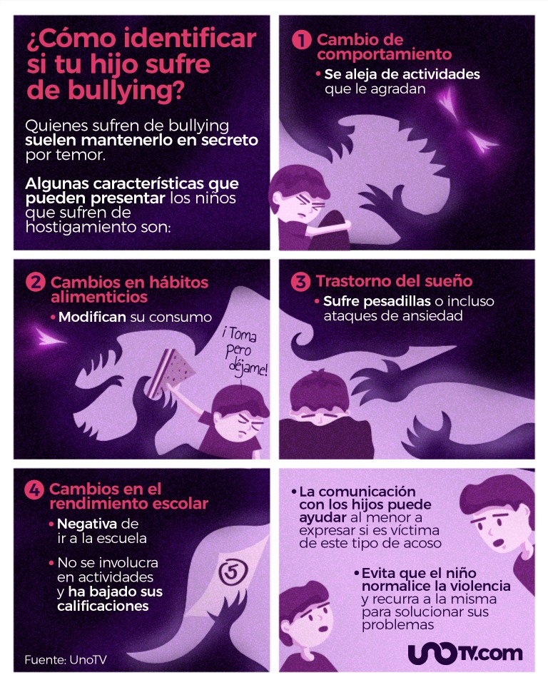

Diferencias entre Acoso, Bullying y Ciberbullying
La palabra bullying se refiere a aquellos casos en los que un alumno o alumna es intimidado o vejado por otros compañeros de forma continuada en el tiempo.
Para poder hablar de un caso de bullying es necesario que se den una serie de elementos:
- Que exista una intencionalidad del acosador.
- Las acciones de acoso se repitan a lo largo del tiempo.
- Que exista un desequilibrio de poder físico, social o psicológico entre el acosador y su víctima.
- Que el acoso se realice siempre sobre el mismo niño o niña.
Cuando se habla de casos de violencia escolar, nos referimos a supuestos de violencia que puede dirigirse a los alumnos y alumnas, al profesorado o al propio centro.
Pueden ser casos de maltrato físico, maltrato emocional, abuso sexual, vandalismo, negligencia etc. Las diferencias entre el acoso escolar y la violencia escolar son las siguientes:
- El acoso escolar se produce entre iguales, uno o varios alumnos acosan a otro.
- La violencia escolar puede ir dirigida contra profesores u objetos del centro.
- El acoso escolar se repite a lo largo del tiempo mientras que la violencia escolar puede ser puntual.
El Ciberbullying. El uso de internet tiene muchas ventajas para la enseñanza, pero también tiene un lado negativo que es el ciberbullying o ciberacoso. El ciberbullying supone el uso de las nuevas tecnologías para acosar a un alumno o alumna. Las diferencias entre el bullying y el ciberbullying son las siguientes:
- El bullying se desarrolla físicamente en el entorno escolar, sin embargo, el ciberbullying se desarrolla en internet.
- Como consecuencia de lo anterior, en el ciberbullying no existe un contacto directo entre agresor y víctima, de hecho, el agresor suele mantener su identidad escondida para protegerse.
- El caso del ciberbullying el caso puede tener una visibilidad mayor debido al uso de las redes sociales, por ejemplo, y alcanzar a muchas más personas, agravando, de esa forma, la situación de la víctima.
